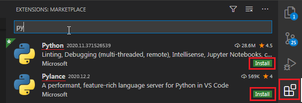
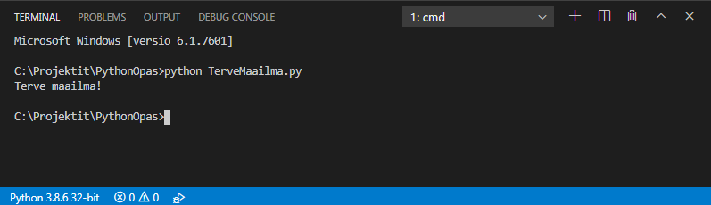
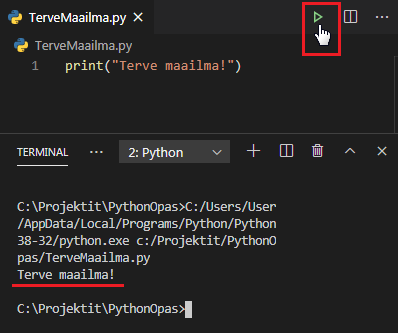

4_Python_kehitysympäristö
Kehitysympäristöllä tarkoitetaan kokonaisuutta joka pitää sisällään kaikki joko kielen, alustan tai ohjelmistokehyksen kannalta oleelliset työkalut. Yksinkertaisimmillaan tähän kokonaisuuteen kuuluu tekstinkäsittelyohjelma jolla koodia kirjoitetaan, tulkki tai kääntäjä jolla ohjelmakoodia muutetaan tietokoneen ymmärtämään muotoon.
Visual Studio Code
Koska koodin kirjoittaminen muistiolla on nykypäivänä tietynlaista masokismia on parempi, että lataamme siihen paremmin soveltuvan työkalun. Pythonille kirjoitushetkellä suositut valinnat ovat Visual Studio Code (lyh. VSCode tai Code) ja PyCharm. Tässä oppassa tulemme käyttämään VSCodea sillä editori on melko suosittu myös muita ohjelmointikieliä kirjoittaessa (esim. javascript, typescript, java, rust, go).
Lataa ja asenna VSCode koneellesi. Asennustiedoston voi käydä latailemassa Visual Studio Coden sivuilta joihin löytyy linkki alta.
Kun asennus on valmis avaa Visual Studio Code. Avaa laajennusvalikko (engl. Extensions) ja hae Python ja Pylance laajennuksia. Asenna laajennukset Visual studio codeen asennuspainikkeella (engl. Install)
Laajennusvalikon saa auki myös näppäinyhdistelmällä CTRL+SHIFT+X
Laajennuksista saa lisätietoja niitä klikkaamalla.

(Perusasetuksilla valikko on vasemmalla, olen siirtänyt sen omassa asennuksessa oikealle)
- Python laajennus
- Laajennus tuo editoriin toiminnallisuudet mm. ajaa, analysoida, formatoida koodia sekä tuo koodin ulkoasuun vähän väriä, mikä helpottaa koodin lukemista.
- Pylance laajennus
- Parantaa python kielen tekstin automaattista täydennystä joka nopeuttaa koodin kirjoittamista. Automaattisella täydennyksellä editori tarjoaa ehdotuksia koodia kirjoittaessa joista voi halutessaan valita täydennyksen nuolinäppäimillä + tabilla haluamansa tai ihan hiirellä klikkaamalla.
- Automaattisen täydennyksen ehdotukset saa esille myös näppäinyhdistelmällä ctrl + space
Projektikansion avaaminen VSCodessa
Avaa viime osiossa luotu python_opas kansio VSCodessa. Tämä onnistuu valitsemalla ylävalikosta
File > Open Folder
Nyt pitäisi avautua perinteinen kansion valintanäkymä josta voit navigoida PythonOpas kansioon. Mikäli laitoit kansion suosittelemaani paikkaan sen pitäisi löytyä seuraavasta polusta:
C:\projektit\python-opas
PythonOpas kansion pitäisi avautua sisältöineen Visual Studio Codeen.
Python koodin ajaminen VSCodella
VSCode sisältää sisäänrakennetun komentorivin jonka saa esiin näppäinyhdistelmällä Ctrl + ö. Vaihtoehtoisesti komentorivin saa esiin myös ylävalikosta.
View > Terminal
Komentorivin pitäisi avautua suoraan VSCodessa auki olevaan projektikansioon. Voit suorittaa viime [osiossa]../3_komentorivi/) luodun TerveMaailma.py kooditiedoston kirjoittamalla komennon python tiedostonimi eli:
python TerveMaailma.py

Toinen vaihtoehto olisi avata tiedosto ja painaa yläkulmasta löytyvää play nappulaa jolloin VSCode ajaa sillä hetkellä auki olevan python kooditiedoston komentorivillä.
